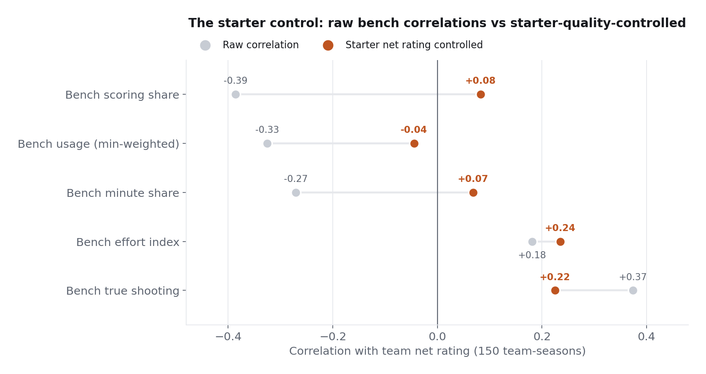

Bench Usage and Team Success
Front offices argue about whether a heavy bench is a weakness and whether a designated bench scorer is worth paying for. Bench statistics are confounded by the starters in front of them, so this study refuses every raw correlation until it has been re-estimated with starter quality partialled out, with permutation p-values and a Holm correction pricing in every test that was run.
Does relying on your bench cost you games?
The raw answer is yes and the controlled answer is no. Bench scoring share correlates with team net rating at -0.386 across 150 team-seasons, but the association collapses to +0.083 once starter quality is held fixed: bad starters cause both the losing and the bench reliance. What survives the control is bench efficiency (+0.225 partial) and a hustle-based effort index (+0.235), while the designated-bench-scorer share is null at all three thresholds tested.
Five regular seasons, 150 team-seasons, one discipline: the two confounds are named before any result. Good starters shrink the bench's role while winning games, and good teams generate garbage time that inflates bench minutes in wins. Every headline correlation is re-tested as a partial correlation against starter net rating, significance comes from 10,000-shuffle permutation tests with a finite-sample estimator, seven tests on the same rows are Holm-corrected, and both surviving findings face a franchise cluster bootstrap that resamples all five of a franchise's seasons together, because 150 rows from 30 franchises are not 150 independent facts.
Three questions: does bench share correlate with winning, does the structure of bench usage matter (low-usage role players versus bench scorers who need the ball), and can bench quality be measured without traditional production statistics at all? The starter and bench splits use the league's own per-game definition of who started, which counts a player traded into a starting job correctly on both sides where a minutes heuristic would misclassify him. One data trap handled explicitly: the advanced player table's minutes column is per-game even in totals mode, so true bench minutes are joined from the base table and used as the aggregation weights.
Bench usage level is a starter artifact (-0.326 raw to -0.045 controlled). The bench-scorer share is uncorrelated with success raw and controlled, at 22, 24, and 26 percent usage definitions alike. Bench true shooting is the one traditional statistic that survives (+0.374 raw, +0.225 controlled, positive in all five individual seasons), with the stated caveat that part of it runs through team offensive rating, where bench points sit inside the outcome. The two production-free measures split: coach-revealed clutch trust is an honest null with a structural explanation, and the hustle-based effort index survives the starter control at +0.235 with a franchise-bootstrap interval of +0.09 to +0.36.

The deployed table behind the figure covers all 150 team-seasons: every bench profile beside its team and starter net ratings, sortable by any column, including the effort index whose association survives the starter control.
Sort every bench profile
All 150 team-seasons with starter net rating alongside, because the study's central finding is that raw bench numbers mislead without it. Default sort is the effort index; click any header to re-sort.
A senior-level review pass changed three things. Permutation p-values moved to the finite-sample (k+1)/(n+1) estimator, because a 10,000-shuffle test cannot produce zero. The effort index turned out to be mis-specified as a raw sum, with contested shots supplying 67.7 percent of it by construction; re-specified as an equal-weight composite of standardized components it strengthens to +0.324, and the conservative pre-registered number is the one reported. And the closing recommendation was rewritten from acquisition advice into prioritization under association, because part of measured bench efficiency travels with the starters who create the looks, and this design cannot separate the player from the ecosystem.
Observational league data: no correlation here licenses a causal claim. Garbage time inflates bench minutes for good teams, which works against the raw negative, so the true starter artifact may be larger than measured. The effective sample is smaller than 150 because franchises repeat, which the cluster bootstrap prices in. Playoffs are excluded by design because playoff rotations are a different regime.
Technical deep dive
Technical highlights
- Every claim ships with a permutation p-value; seven tests on the same 150 rows are Holm-corrected, and the correction changes one verdict, which is reported as changed.
- Franchise cluster bootstrap: all five seasons of a resampled franchise move together, so a finding that exists only because well-run franchises repeat five times is exposed.
- Specification sensitivity on every judgment call: the high-usage line at 22/24/26 percent, the hustle minutes floor at 150/200/250, and the effort index in four functional forms.
- A part-whole diagnostic splits the efficiency finding into offensive and defensive halves, exposing exactly where measurement overlaps mechanism.
Key decisions
- Why permutation tests instead of parametric ones?
- Team net ratings across five seasons make no distributional promise. Shuffling team labels 10,000 times replaces the assumption with a demonstration, and the finite-sample estimator keeps the smallest reportable p-value honest at 1/10,001.
- Why is bench on-court net rating excluded from the findings?
- It correlates with team net rating at +0.897, but bench possessions are a component of the team total, so the relationship is close to tautological. It is reported as a methodological note instead of a finding.
Technology stack
Built on five seasons (2021-22 through 2025-26) of NBA Stats dashboard data compiled into a local SQLite database of 97 tables. All six research studies run against the same database. Every number quoted is generated by the notebook's own executed code, deterministically seeded, and re-verified from a clean environment. Notebooks available by email.